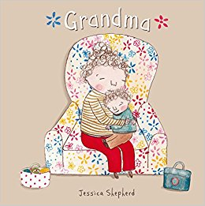

Grandma
By Jessica Shepherd
Grandma still tells me lots of stories about her life. I know them all by heart, so that I can remind her if she forgets one day.
Oscar loves Grandma, and their time together is always lots of fun. As she becomes less able to look after herself, she has to go into a care home. More and more children are encountering dementia and its effects on their families. This touching story, told in Oscar's own words, is a positive and practical tale about the experience. The factual page about dementia helps children talk about their feelings and find new ways to enjoy the changing relationship. Jessica Shepherd's sensitive first picture book has grown out of her experiences in a variety of caring roles.
Age Range: 3 - 8 years
Find out more:
here
Watch a video: here